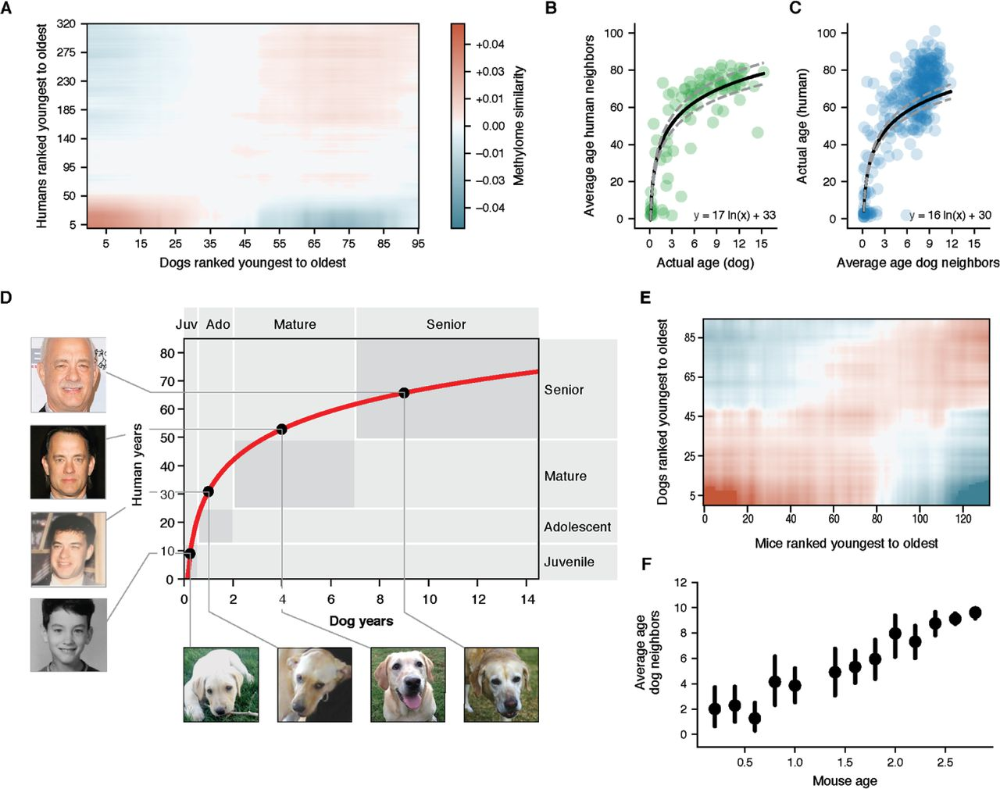

Our pet birthday calculator allows you to input your pet's birth date and select the pet type (dog or cat). It calculates your pet's age in human years and provides upcoming birthday information based on specific formulas for each animal type.
For dogs, the age calculation is based on a logarithmic formula derived from scientific research:
human_age = 16 ln(dog_age) + 31
This approach reflects how dogs age faster than humans, especially in their early years. The formula gives a more accurate estimation of a dog's age in human years, accounting for breed and size differences.
You can read more about this in the research paper: Canine Age and Life Expectancy: A Novel Method to Estimate the Human Age of Dogs.
To give a clearer picture, here are the aging rates for dogs.
Dog Aging Rates (years to human years):
[31, 11, 7, 4, 4, 3, 2, 2, 2, 2, 1, 2, 1, ...]
For cats, the age conversion is more straightforward, based on commonly accepted age equivalents:
This method is simpler because cats tend to have a more uniform aging process compared to dogs.
To give a clearer picture, here are the aging rates for dogs.
Cat Aging Rates (years to human years):
[15, 9, 4, 4, 4, ...]
You can find the complete source code for this pet age calculator on my GitHub repository. The code is open-source and available for anyone interested in exploring or contributing. If you'd like to see how the calculations work or adapt them for your own projects, feel free to check it out.
Visit the repository on GitHub: calc-pet-bday.
If you have any questions, suggestions, or collaboration ideas, you can reach me directly via email at 2499931@gmail.com. I'd love to hear your feedback!
Best regards,
Andrey Kudinov